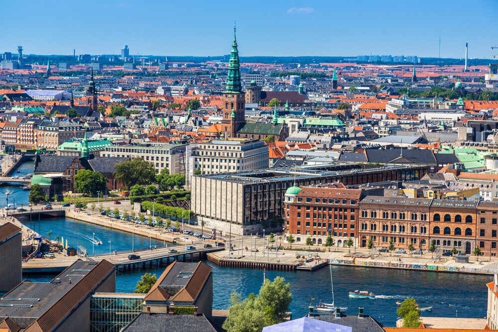
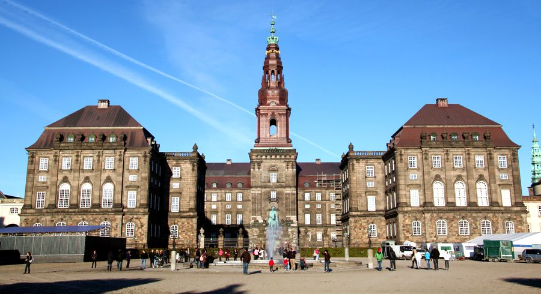

Страны Европы |
|---|
ДанияДания - официально — Королевство Да́ния (дат. Kongeriget Danmark), — государство в Северной Европе, старший член содружества Королевство Дании, в которое также входят Фарерские острова и Гренландия. Этимология слова «Дания» в точности не известна; в источниках V—VI вв. упоминается др.-герм. племя даны, жившее на Ютландском п-ове. В IX в. при административном устройстве пограничных земель империи Карла Великого была образована Danmark — «данская марка» (марка — др.-верх.-нем. «граница, пограничные земли»), ставшая в XI в. государством Danmark. Дания — самая южная из скандинавских стран, расположенная на юго-западе от Швеции и на юге от Норвегии, с юга граничащая с Германией по суше. Дания омывается Балтийским и Северным морями. Территория страны включает в себя большой полуостров Ютландия и 409 островов Датского архипелага, среди которых наиболее известны такие, как Зеландия, Фюн, Венсюссель-Ти, Лолланн, Фальстер и Борнхольм. Дания — конституционная монархия, главой государства является монарх, который осуществляет законодательную власть совместно с однопалатным парламентом — фолькетингом (179 депутатов). Дания — член Евросоюза с 1973 года, но до сих пор не входит в Еврозону. Дания является одним из основателей НАТО и Организации экономического сотрудничества и развития. Достопримечательности страныДворец ХристианборгЛюбителям истории особо по нраву придёт это величественное по своему строению здание, раскинувшееся на острове Слотсхолмен. Дворец служил местом собрания королевских особ в начале 17 века. Интересен как внутри – включает в себя 3 больших зала с собранием культурных ценностей прошлого столетия, так и снаружи — дворец окружают многочисленные речные массивы и лесопарковые зоны. |